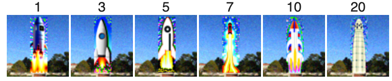

Overview
In this project, I implemented and deployed diffusion models for image generation.
Part A: Diffusion Models Exploration
Overview
In part A, I explored diffusion models, implemented sampling loops, and applied them for tasks such as inpainting and creating optical illusions.
Part 0: Image Generation with DeepFloyd IF
My seed is 3037150359.
Using the DeepFloyd IF diffusion model, a two stage Diffusion Model trained by Stability AI, I generated 3 images for each one of the 3 provided text prompts. I varied the number of inference steps from 5, 10, 20 and 40 for each one of the images. Below are the results. The generated images align with the provided prompts. We can see that as num_inference_steps increases, the images become more detailed and “artistic”.


1.1 Forward Process
In this step, I implemented the forward process of diffusion, which adds scaled noise to a clean image at different timesteps. Using a test image, I visualized the results for t=250,500,750t = 250, 500, 750t=250,500,750, showing how the image becomes progressively noisier as t increases. These results demonstrate the gradual transformation of a clean image into noise, setting the stage for the reverse process to reconstruct the original image.
1.2 Classical Denoising
I used Gaussian Blur to try to remove the noise


1.3 One-Step Denoising
In this step, I utilized a pretrained UNet from the diffusion model to denoise images. Using the noisy images generated in Part 1.2 (t=250,500,750t = 250, 500, 750t=250,500,750), I: 1. Estimated the Gaussian noise present in the noisy images using the UNet. 2. Removed the noise to reconstruct an estimate of the original image. I visualized the results for each timestep, showing the progression from the clean original image to the noisy version and then back to the denoised estimate. This demonstrates the model's ability to recover meaningful details from noisy inputs, providing a closer approximation to the original image.

1.4 Iterative Denoising
In this step, I worked on iterative denoising, a powerful technique used in diffusion models to clean up noisy images step by step. Starting with a heavily distorted image, I gradually refined it over multiple steps, following a schedule of decreasing noise levels. This approach proved much better at reconstructing detailed, high-quality images compared to simpler methods like single-step denoising or blurring.

1.5 Diffusion Model Sampling
In this step, I used the iterative denoising function to generate images from scratch by starting with random noise. By setting the starting point to pure noise and applying the denoising process iteratively, I was able to sample images corresponding to the prompt "a high quality photo."
1.6 Classifier-Free Guidance
In this step, I implemented Classifier-Free Guidance (CFG) to significantly enhance the quality of images generated from random noise. CFG works by combining two noise estimates: one conditioned on a text prompt and another unconditional estimate. By adjusting the balance between these estimates, we can control the image quality. The images generated from scratch with the prompt "a high quality photo" and CFG showed much higher quality compared to the previous section.

1.7 Image-to-Image Translation
In this step, I explored image-to-image translation, where I applied a noise and denoising process to make gradual edits to an image. Starting with a real test image, I added noise and used the iterative_denoise_cfg function to progressively refine the image, simulating edits based on the prompt "a high quality photo." By adjusting the noise levels, I created a series of images that became closer to the original, with the edits becoming more refined as the noise level decreased.


1.7.1 Editing Hand-Drawn and Web Images
In this step, I experimented with editing non-realistic images, such as hand-drawn sketches and web images, using the same diffusion model procedure. By applying noise and denoising iteratively, I was able to project these images onto the natural image manifold, transforming them into more realistic versions. I started by downloading a web image and applying the denoising edits at varying noise levels. I also drew my own hand-drawn images, following the same process to see how the model refined them. The results showed how the diffusion model can creatively enhance and modify both hand-drawn and web-based images, gradually making them look more natural and realistic.

1.7.2 Inpainting
In this step, I implemented inpainting, which allows us to modify specific parts of an image while preserving the rest. Using a binary mask, I applied the diffusion model to create new content wherever the mask is active (set to 1), while leaving the other areas of the image untouched. To do this, I started with the original image and the mask, running the diffusion model denoising loop. At each step, I ensured that the pixels outside the mask were replaced with new content, while maintaining the existing content where the mask was 0. I used this technique to inpaint the top of the Campanile and applied similar edits to my own images, experimenting with different masks to create unique results.

1.7.3 Text Conditioned Image-to-Image Translation
In this step, I extended the inpainting process by incorporating text prompts, enabling more controlled edits.
1.8 Visual Anagrams
In this part of the project, I implemented Visual Anagrams, using diffusion models to generate optical illusions. The idea was to create an image that, when viewed in one orientation, portrays one scene, but when flipped upside down, reveals an entirely different scene. For this, I used two text prompts: one for the original image and one for the flipped image. The process involved denoising the image normally for one prompt and denoising the flipped version of the image for the second prompt. By averaging the noise estimates from both steps, I achieved a hybrid image that displays different scenes depending on its orientation.

1.10 Hybrid Images
In this part of the project, I implemented Hybrid Images using diffusion models. The goal was to create images that reveal different scenes depending on the viewer's distance. This technique combines low and high-frequency components from two different prompts to produce a composite image with distinct features at varying scales. The process involved using two separate text prompts and obtaining their noise estimates using a diffusion model. For one prompt, the low-frequency components were preserved, while for the other, the high-frequency components were retained. By combining these components, I generated an image that looks like one thing from a distance and transforms into something entirely different when viewed up close.
Part B: Training Diffusion Models from Scratch
Overview
In part B, I trained my own diffusion model on the MNIST.
Part 1: Training a Single-Step Denoising UNet
1.1 Implementing the UNet
In this part of the project, I implemented the UNet architecture for image denoising in diffusion models.
1.2 Using the UNet to Train a Denoiser
We aim to solve the following denoising problem: Given a noisy image z, we aim to train a denoiser Dθ such that it maps z to a clean image x. z=x+oe, where e~N(0,I) Here we can visualize the different denoising processes over o = [0.0, 0.2, 0.4, 0.5, 0.6, 0.8, 1.0]
1.2.1 Training
I trained a UNet model to denoise images by mapping noisy inputs to clean versions using the MNIST dataset. The model was trained for 5 epochs. I used the Adam optimizer, a hidden dimension of 128 and batch size of 256.
Training Loss Curve
1.2.2 Out-of-Distribution Testing
See how the denoiser performs on different σ's that it wasn't trained for.
Part 2: Training a Diffusion Model
In this section, we changed our UNet to predict the added noise ϵ instead of the clean image x. First I worked on training a diffusion model using a time-conditioned UNet to gradually denoise images and generate realistic samples. Later I introduced class-conditioning to give more control over the generated images.
2.1 Adding Time Conditioning to UNet
I modified the UNet to include time conditioning, embedding the timestep into the network with FCBlocks.
2.2 Training the UNet
The time-conditioned UNet was trained on MNIST, learning to predict noise from noisy images. I used the Adam optimizer and exponential learning rate decay, batch size of 128, and a hidden dimension of 64. I trained the model over 20 epochs.
Time-Conditioned UNet training loss curve
2.3 Sampling from the UNet
Starting with pure noise, the trained UNet iteratively denoised images to produce realistic MNIST digits.
2.4 Adding Class-Conditioning to UNet
To control which digit was generated, I extended the UNet with class conditioning. This involved adding one-hot encoded class vectors (0-9) into the network, with dropout for occasional unconditional generation.
Class-conditioned UNet training loss curve
2.5 Sampling from the Class-Conditioned UNet
The class-conditioned UNet generated specific digits with improved accuracy using classifier-free guidance.